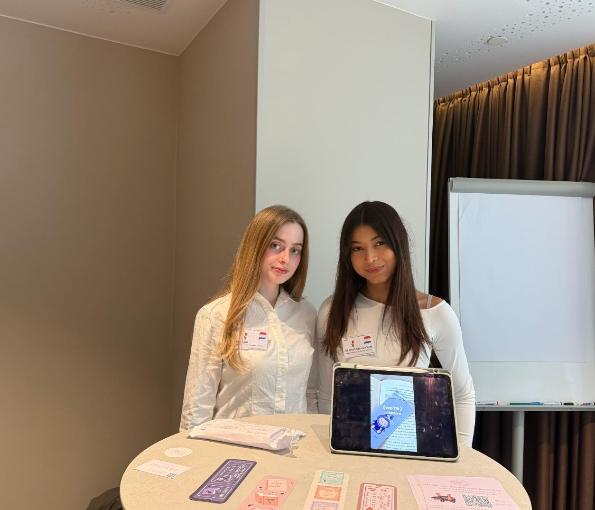
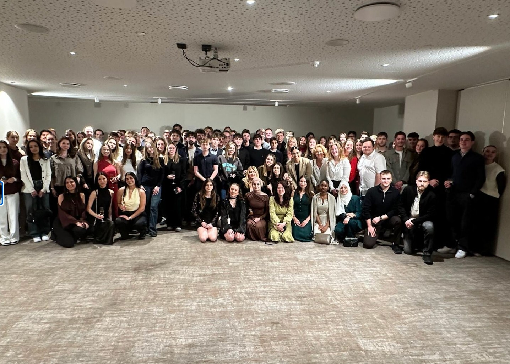
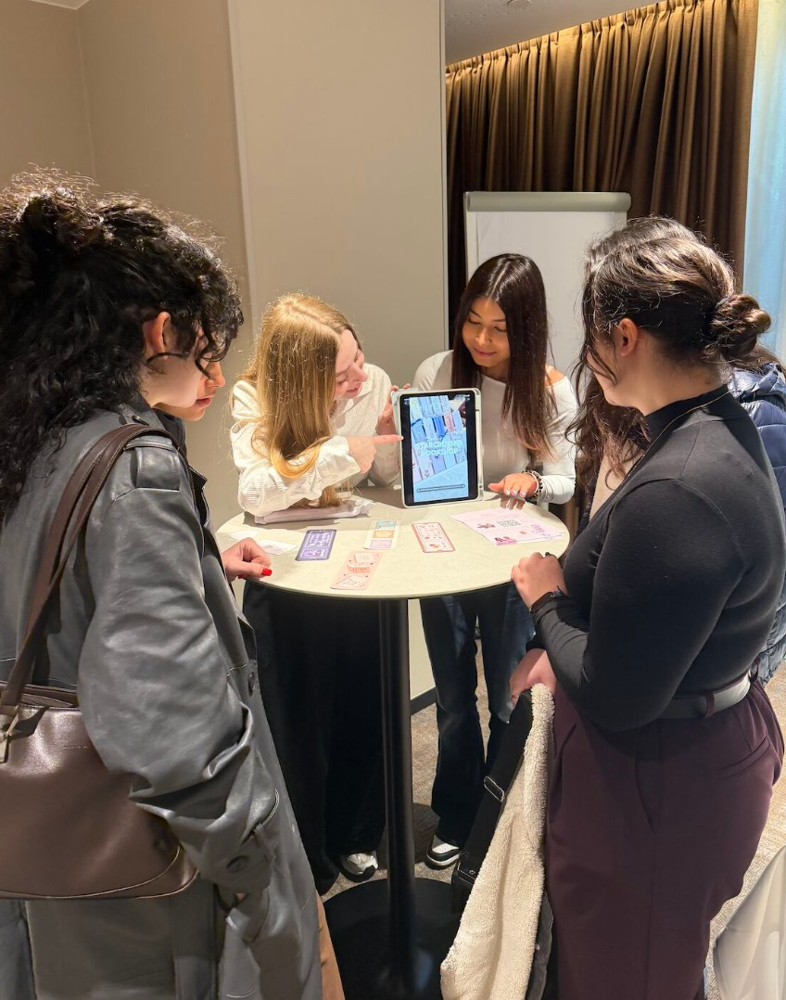

International Trade Mission
Star Crossed Bookshop
During the International Trade Mission, I helped promote Star Crossed Bookshop and support its international expansion. I contributed by presenting the product, speaking with potential customers, gathering market feedback, and helping communicate the brand’s value in an international setting.
Brand promotionMarket researchCustomer interactionInternational sales


